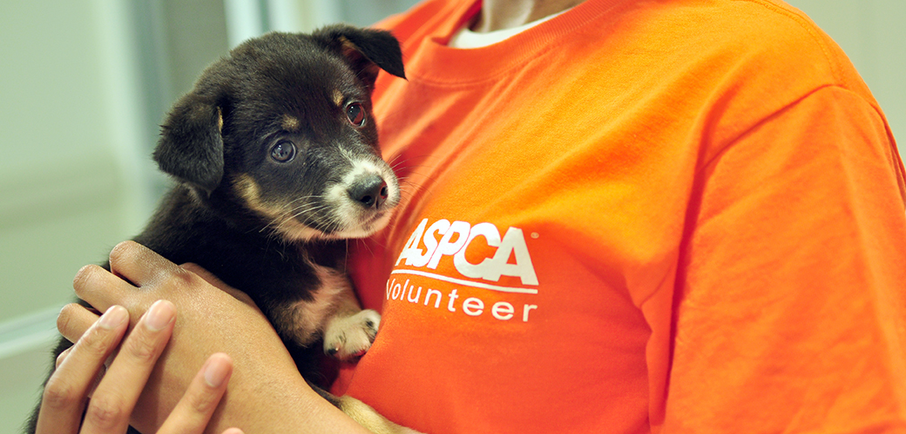

Veganism is a lifestyle without the consumption of any product made from animals. This also includes clothing, such as fur, leather and silk. As more and more people adopt vegan values, the need to produce animal products decreases.
Volunteer at your local animal welfare/protection organization. Use thisdirectoryto begin signing up now! Use your abilities to help fundraise, manage their websites, design flyers, or take photographs of animals available for adoption.